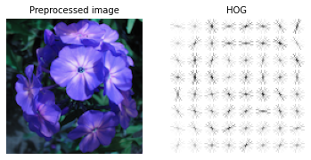

PCA
Principal component analysis (PCA) is a feature extraction approach for which we can leverage on the first few principal components and ignoring the rest.
In clustimage the pca library utilized to extract the first 50 (default) components.
The use of PC’s for clustering is usefull in applications with among others faces, where so called eigenfaces are computed.
The eigenface is a low-dimensional representation of face images. It is shown that principal component analysis could be used on a collection of face images to form a set of basis features.
# Initialize with pca and 50 PCs
cl = Clustimage(method='pca', params_pca={'n_components':50})
# Take the number of components that covers 95% of the data
cl = Clustimage(method='pca', params_pca={'n_components':0.95})
# Load example data
X = cl.import_example(data='mnist')
# Check whether in is dir, list of files or array-like
X = cl.import_data(X)
# Extract features using method
Xfeat = cl.extract_feat(X)
# Alternatively, the features are also stored in the results dict
cl.results['feat']
# Alternatively, the features are also stored in the results dict using the run-at-once function.
results = cl.fit_transform(X)
# Extracted PC features
results['feat']
HOG
Histogram of Oriented Gradients (HOG), is a feature descriptor that is often used to extract features from image data. In general, it is a simplified representation of the image that contains only the most important information about the image. The HOG feature descriptor counts the occurrences of gradient orientation in localized portions of an image. It is widely used in computer vision tasks for object detection.
The HOG descriptor focuses on the structure or the shape of an object. Note that this is different then edge features that we can extract for images because in case of HOG features, both edge and direction are extracted.
The complete image is broken down into smaller regions (localized portions) and for each region, the gradients and orientation are calculated.
Finally the HOG would generate a Histogram for each of these regions separately. The histograms are created using the gradients and orientations of the pixel values, hence the name Histogram of Oriented Gradients
Not all applications are usefull when using HOG features as it “only” provides the outline of the image. For example, if the use-case is to group faces or cars, HOG-features can do a great job but a deeper similarity of faces or types of cars may be difficult as the details will be losed.
The input parameters for the HOG function clustimage.clustimage.Clustimage.extract_hog()
image vector : Flattened 1D vector of the image
orientations : number of allowed orientations (default is 8)
pixels_per_cell : Number of pixels per cell aka the HOG-resolution (default: 16, 16)
cells_per_block : number of cells per block (default: 1, 1).
# Initialize with HOG
cl = Clustimage(method='hog', params_hog={'orientations':8, 'pixels_per_cell':(8,8), 'cells_per_block':(1,1)})
# Load example data
X = cl.import_example(data='mnist')
# Check whether in is dir, list of files or array-like
X = cl.import_data(X)
# Extract features using method
Xfeat = cl.extract_feat(X)
# Alternatively, the features are also stored in the results dict
cl.results['feat']
# Alternatively, the features are also stored in the results dict using the run-at-once function.
X = cl.import_example(data='mnist')
# Fit and transform
results = cl.fit_transform(X)
# Extracted PC features
results['feat']
Another approach to extract HOG features by directly using the extract_hog functionality:
import matplotlib.pyplot as plt
from clustimage import Clustimage
# Init
cl = Clustimage(method='hog')
# Load example data
pathnames = cl.import_example(data='flowers')
# Read image according the preprocessing steps
img = cl.imread(pathnames[0], dim=(128,128), colorscale=0)
# Extract HOG features
img_hog = cl.extract_hog(img)
plt.figure();
fig,axs=plt.subplots(1,2)
axs[0].imshow(img.reshape(128,128))
axs[0].axis('off')
axs[0].set_title('Preprocessed image', fontsize=10)
axs[1].imshow(img_hog.reshape(128,128), cmap='binary')
axs[1].axis('off')
axs[1].set_title('HOG', fontsize=10)
 |
Here it can be clearly seen that the HOG image is a matrix of 8x8 vectors that is derived by because of the input image (128,128) devided by the pixels per cell (16,16). Thus 128/16=8 rows and columns in this case. If an increase of HOG features is desired, you can either increasing the image dimensions (eg 256,256) or decrease the pixels per cell (eg 8,8).